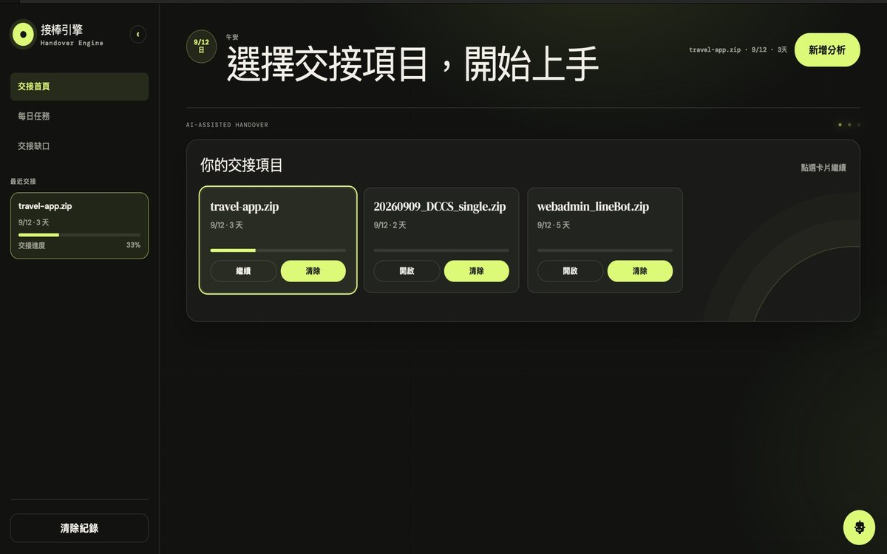
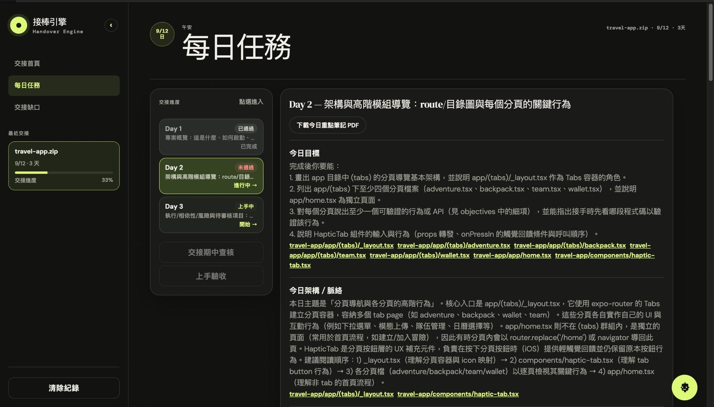
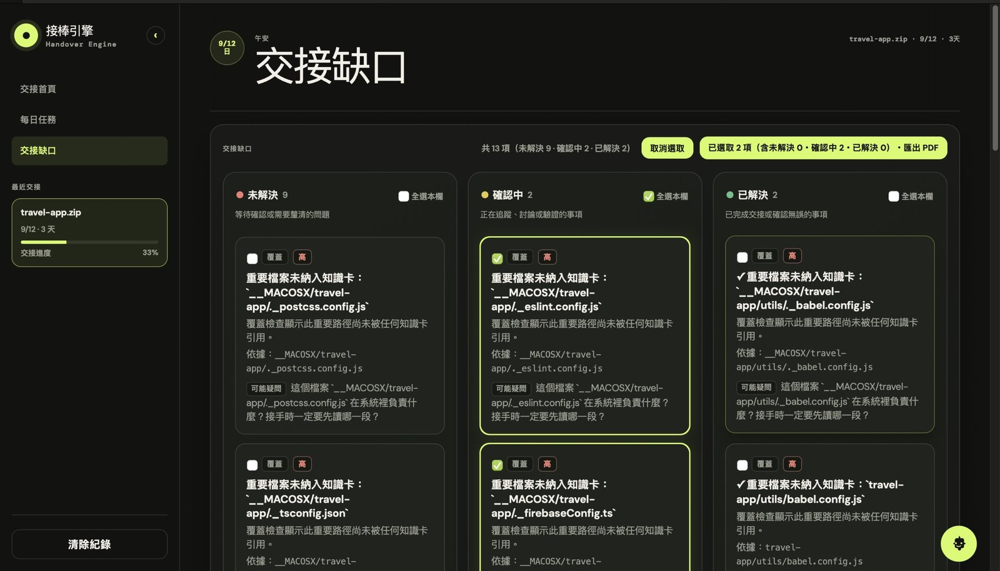
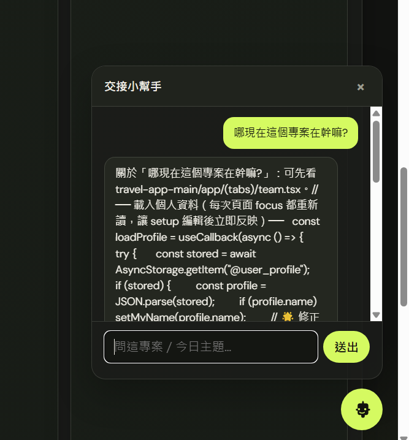

作品概要
接手別人的專案時，最花時間的是搞懂程式碼。接棒引擎分析專案的 ZIP，產生多日的交接學習計畫、每日教材、測驗、交接缺口清單與可下載的交接包，幫接任者快速上手。
我負責的部分
團隊作品。我負責前端介面的修改。
技術與工具
- LangGraph：把分析流程拆成多個節點：ingest → index → extract → coverage → gaps → outline → 每日教材 → 測驗 → validate / repair → 圖表 → PDF → 打包。
- FastAPI：Jobs 與學習計畫 API，前端（HTML / CSS / JS）也由同一個服務提供，不用另外啟動前端伺服器。
- OpenAI 相容 API：線上模式產生內容；另有不需要金鑰的 fake 模式，可以離線驗證。
- SQLite：記錄 Job 與執行狀態。
- fpdf2：匯出教材、每日筆記與缺口清單 PDF。
- pytest：26 個測試檔，可以用 fake 模式跑完整離線回歸。
製作過程
- 2026 年 9 月在蝦皮 × OpenAI Codex 黑客松和團隊一起開發。
待補：開發過程中的關鍵決定與遇到的問題。
來源：SOURCE.md
目前成果
可以實際使用的完整流程。封面和以下截圖用 TabiTabi 的程式碼（travel-app.zip，3 天交接）當作測試專案：



- 上傳專案 ZIP，安全解壓，排除虛擬環境、相依套件與機密檔案。
- 每日查核必須 100 分才算通過；另有期中查核與上手驗收。
- 可下載完整交接 ZIP 與各種 PDF。